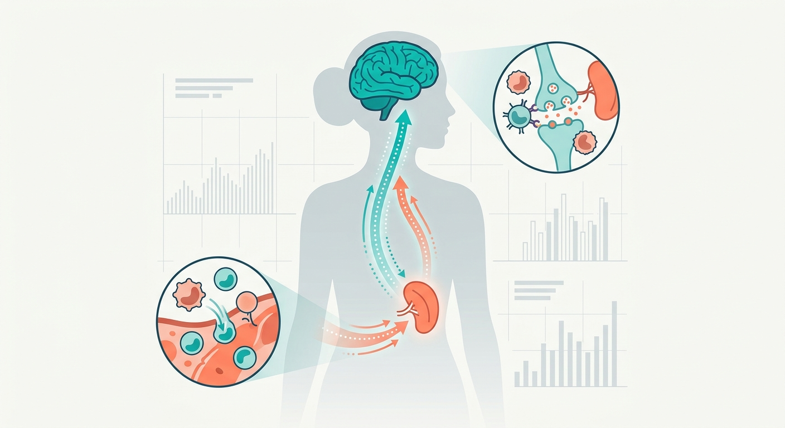

The Spleen's Whisper: How a Periphery-to-Brain Axis Steers Female Cognitive Aging

There is a biological paradox at the heart of human longevity: women, on average, live longer than men, yet they bear a disproportionate burden of cognitive decline and Alzheimer’s disease. For decades, science has chalked this up to the abrupt hormonal cliff of menopause. But a groundbreaking study published in Neuron suggests we have been looking at the wrong organ. The real culprit behind female cognitive vulnerability in midlife might not be the ovaries, but the spleen—acting as a distant molecular puppet master of the brain.
Researchers have identified a novel periphery-to-brain communication pathway that accelerates brain aging during female midlife. The journey begins with an epigenetic shift in the spleen, a major hub of the immune system. In middle-aged female mice and human tissue samples, scientists observed the upregulation of an X-linked RNA-binding protein called RBMX. This protein acts like an overactive printing press, churning out a tiny regulatory molecule called miR-10a-5p. This microRNA does not stay put; it travels from the spleen through the bloodstream, crosses the blood-brain barrier, and infiltrates the cerebral cortex.
Once inside the brain, miR-10a-5p acts like a cellular mute button. It directly targets and represses γCaMKII, a critical enzyme responsible for calcium signaling and neuronal survival. Without functional γCaMKII, the brain's powerhouses—the mitochondria—begin to sputter and fail. This mitochondrial collapse triggers cellular senescence, turning healthy neurons into inflammatory "zombie" cells that degrade cognitive function and erode memory. Crucially, when the researchers blocked this microRNA in aged mice and in human neurons derived from Alzheimer's patients, they successfully reversed these senescent features, restored mitochondrial vigor, and rescued memory deficits.
However, translating this elegant biology from the lab bench to the clinic will be an uphill battle. While the therapeutic reversal of cognitive decline in human Alzheimer's-derived neurons is a stunning proof of concept, we must remember that a petri dish cannot replicate the systemic complexity of a living human. Targeting microRNAs in the periphery presents a massive delivery challenge; getting an inhibitor safely across the blood-brain barrier without triggering adverse immune reactions in the spleen is a formidable obstacle. Furthermore, the spleen is a dynamic immunological organ, and permanently silencing miR-10a-5p could have unforeseen consequences on systemic immunity. Decades of research show that mouse immunology often fails to mirror human biology perfectly, meaning the long road to clinical validation has only just begun.
Sources & Citations:
Primary Source: A miR-10a-5p-γCaMKII axis links periphery-to-brain signaling to cognitive vulnerability during female midlife. (Neuron)
- A miR-10a-5p-γCaMKII axis links periphery-to-brain signaling to cognitive vulnerability during female midlife. Neuron (2026). https://doi.org/10.1016/j.neuron.2026.08.022